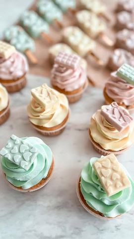

Krem od bele čokolade za kapkejke

Moja beleška
SačuvanoSastojci
Priprema
Razmera ova dva sastojka treba da bude 1:1, što bi značilo na 100 gr čokolade ide 100 ml slatke pavlake. (sa ovom količinom možete da dekorišete 6 🧁) Nemućena slatka pavlaka ugreje se do vrenja i tako vrela prelije preko izlomljene bele čokolade. Sačeka se minut i umeša smesa, tako da bude potpuno glatka. Odloži se u frižider preko noći ili na nekoliko sati dok krem ne postane potpuno čvrst. Dakle, najbolje bi bilo da ovo uradite dan pre nego što pečete cupcakes. Potpuno čvrst fil se umuti u krem predivne teksture a ako zelite da ga bojite dodajte malo gel boje za krem. Zatim, trebaće vam dresir kesa, ja volim ove jednokratne, dovoljno čvrste i zgodne za ruku, kao i metalni nastavak po izboru. Kružnim pokretom ruke prikazano kao na videu kremkajte vaše kolačiće, a ako zelite neku slatku dekoraciju uvek je ukusnija i zanimljivija opcija da bude jestiva - pa možete izabrati neki silikonski kalup i jednostavno izliti topljenu belu čokoladu u njega. Dresir kese, metalne nastavke, boje za krem, za čokoladu, silikonske kalupe naćićete na profilu @svet.poslastičara, a kada se jednom opremite, samo ćete poželeti povremeno dopunu, jer sve te bočice jako dugo traju. Ovde sam isprobala i njihove korpice za pečenje kojima nije potreban ni kalup, već ih možete u većem broju poređati na pleh iz šporeta. Za sve one mame, tetke, bake, strine i ujne koje požele da prenesu svoju ljubav u neke slatke pripreme i još slađa iznenađenja, jer priznaćete uvek je to vredniji dar od bilo kog kupljenog, gotovog kolača. A ako imate neko dodatno pitanje, tu sam ❤️
Originalni opis sa Instagrama
Za dekorisanje cupcake kolačica biće vam potreban recept za krem koji sadrzi samo dva sastojka 🧁: •slatku pavlaku •kvalitetnu belu čokoladu Razmera ova dva sastojka treba da bude 1:1, što bi značilo na 100 gr čokolade ide 100 ml slatke pavlake. (sa ovom količinom možete da dekorišete 6 🧁) Nemućena slatka pavlaka ugreje se do vrenja i tako vrela prelije preko izlomljene bele čokolade. Sačeka se minut i umeša smesa, tako da bude potpuno glatka. Odloži se u frižider preko noći ili na nekoliko sati dok krem ne postane potpuno čvrst. Dakle, najbolje bi bilo da ovo uradite dan pre nego što pečete cupcakes. Potpuno čvrst fil se umuti u krem predivne teksture a ako zelite da ga bojite dodajte malo gel boje za krem. Zatim, trebaće vam dresir kesa, ja volim ove jednokratne, dovoljno čvrste i zgodne za ruku, kao i metalni nastavak po izboru. Kružnim pokretom ruke prikazano kao na videu kremkajte vaše kolačiće, a ako zelite neku slatku dekoraciju uvek je ukusnija i zanimljivija opcija da bude jestiva - pa možete izabrati neki silikonski kalup i jednostavno izliti topljenu belu čokoladu u njega. Dresir kese, metalne nastavke, boje za krem, za čokoladu, silikonske kalupe naćićete na profilu @svet.poslastičara, a kada se jednom opremite, samo ćete poželeti povremeno dopunu, jer sve te bočice jako dugo traju. Ovde sam isprobala i njihove korpice za pečenje kojima nije potreban ni kalup, već ih možete u većem broju poređati na pleh iz šporeta. Za sve one mame, tetke, bake, strine i ujne koje požele da prenesu svoju ljubav u neke slatke pripreme i još slađa iznenađenja, jer priznaćete uvek je to vredniji dar od bilo kog kupljenog, gotovog kolača. Ako vam se ovaj video sviđa, javite da li želite da montiram i pripremu sladoled popsića 😍 A ako imate neko dodatno pitanje, tu sam ❤️ • • • #kapkejk #kapkejkovi #dekoracija #samsvojmajstor #brzoilako #slatkirecepti #idejezapoklon #dezert #idejezadezert #ukusnoilepo #cupcake #cupcakes #cupcakesofinstagram #cupcakesdecoration